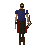

Dark Knight Fortress
Location at 3030, 3633 · Wilderness
Open on the world map → Open in knowledge graph → Below: Dark Knight Fortress (underground)
NPCs
| NPC | Level | Spawns | Notable drops |
|---|---|---|---|
| 25 | 13 | Herb drop table, Coins, Bronze arrow, Iron dagger | |
 Guard Bandit | 22 | 1 | |
| 22 | 1 | Coins, Herb drop table, Iron med helm, Bronze bar | |
| 21 | 4 | ||
| 14 | 1 | ||
| 8 | 15 | Coins, Bronze arrow, Bronze med helm, Mind rune |